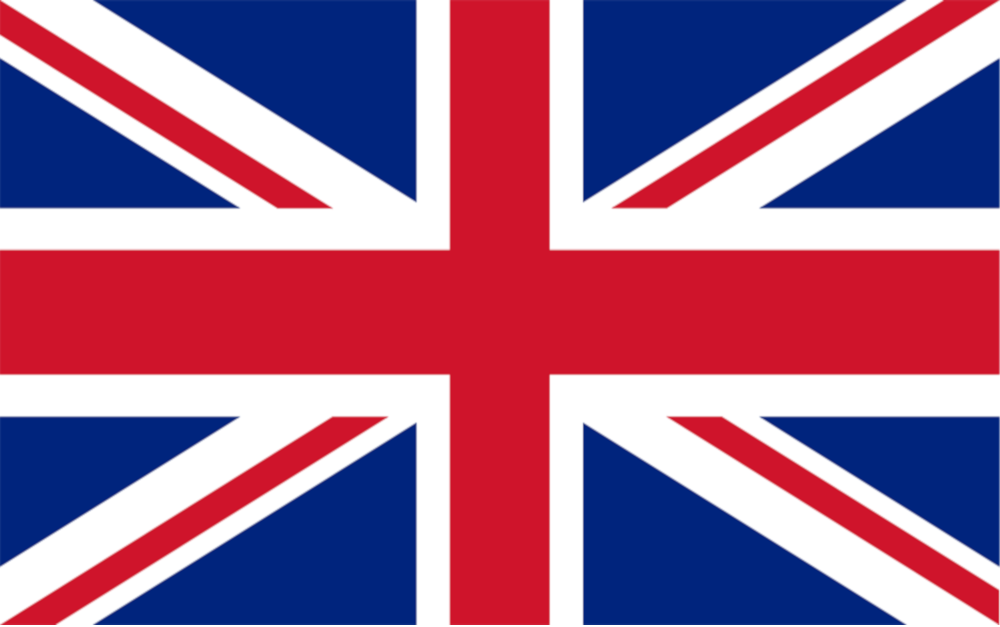
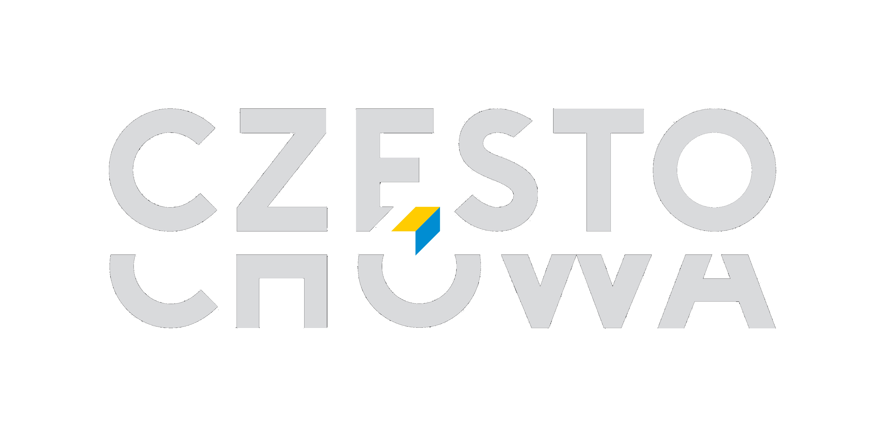
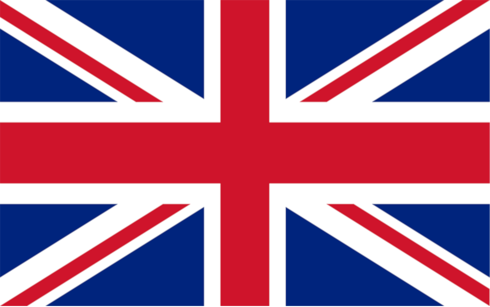
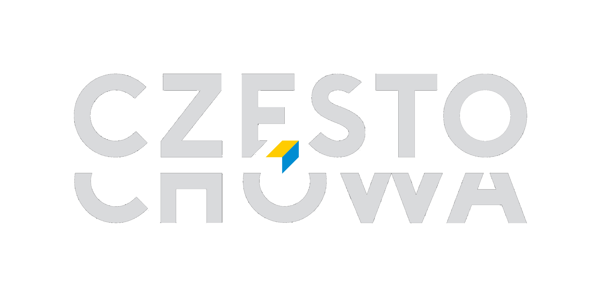
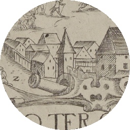
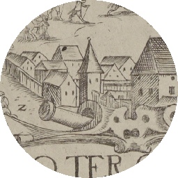

PL
EN


PL
EN




Częstochowa zalicza się do najstarszych osad w północno-zachodniej Małopolsce.
Po raz pierwszy jej nazwę odnotowano w 1220 r. Biskup krakowski Iwo Odrowąż wystawił
wówczas dokument dla klasztoru kanoników regularnych z Mstowa, w którym m.in. odnajdujemy
wzmiankę
o Częstochowie. W dzierżawczej nazwie osady przechowało się słowiańskie imię Częstocha,
pochodzące od imienia Częstobór lub Częstomir, legendarnego jej założyciela i pierwszego posiadacza.
W 1250 r. osadę wymienia bulla papieża Innocentego IV. W kolejnych l. 1325–1327 kościół parafialny
w Częstochowie jest wzmiankowany w wykazach świętopietrza, sporządzonych przez kolektorów papieskich.
Ważne dla miasta dokumenty wiążą się z osobą króla Kazimierza Wielkiego, ostatniego Piasta na tronie polskim,
który bawił w Częstochowie w 1354 r., gdzie spisano dokument na wójtostwo
we wsi Siedlec.
W 1356 r. Kazimierz III Wielki wystawił kolejny dokument, wyraźnie sugerujący, że Częstochowa była obarczona obowiązkiem stanu, czyli powinnością goszczenia monarchy i jego orszaku podczas podróży po kraju. W tym samym roku król nadał przywilej braciom Leonardowi i Kanimirowi na lokację dwóch wsi, „jednej zwanej Częstochową i drugiej nad rzeką w dąbrowie tegoż dziedzictwa Częstochowy”.
Tłumaczenie dokumentu Kazimierza III Wielkiego z 24 sierpnia 1356 r.
W Krzepicach 24 sierpnia 1356 roku.
W imię Pana amen. Ponieważ chcemy, aby w świetnym naszym królestwie powaga naszych
postanowień była trwała i nienaruszona. Dlatego aby było znane do obejrzenia, tak obecnym jak
przyszłym, obecne pismo: Dlatego my Kazimierz z Bożej łaski król Polski, a także Krakowa,
Sandomierza, Sieradza, Łęczycy, Kujaw i Pomorza ziem pan i dziedzic, pragnąc powiększać owoce
urodzajne z gajów, dąbrów i lasów i ustawicznie rozszerzać, więc biorąc pod uwagę godne prośby
[przedstawione] nam przez naszych wiernych, pokornie kłaniających się, mianowicie Leonarda
i Kanimira braci rodzonych, dziedziców Częstochowy (Czanstochoua), obecnie dajemy i nadajemy
tymże Leonardowi i Kanimirowi pełną możność lokacji, na terytorium Krakowskim (Cracouiensi),
dwu wsi na prawie niemieckim mianowicie Średzkim inaczej Nouifori, jedną na starym miejscu,
w którym była położona wspomniana Częstochowa, którą wieś chcemy nazwać właśnie tymże
imieniem, drugą zaś wieś położoną w dąbrowie w dziedzictwie tychże zwanym Częstochowa nad
rzeką, którą potocznie nazywają Rybna. Znosimy również tamże zupełnie (całkowicie) będące
w wszelkie prawa polskie i prawa zwyczajowe, zwykłe i dodatkowe powinności, które temu prawu
niemieckiemu mogłoby przeszkadzać i stawać na przeszkodzie. Dlatego zwalniamy tychże
wspomnianych Leonarda i Kanimira i ich następców, a także sołtysów i kmieci wspomnianych wsi
lokowanych od sądów i jurysdykcji wszystkich naszego Królestwa wojewodów, kasztelanów
i jakichkolwiek sędziów i wiecznie uwalniamy, w ten sposób, że przed nimi lub przez tych nie
powinni być pozywani w pewnych sprawach o głowę (o zabójstwo), kryminalnych, uszkodzenia
członków, a ogólnie w [sprawach] większych i mniejszych, jedynie odpowiadać będą (inaczej jak)
kmiecie przed swoimi sołtysami, wyznaczonymi przez wspomnianych Leonarda i Kanimira albo ich
następców, sołtysi zaś przed panami swoimi, lub przed nami, wszelako skoro powoływać się będą
na dokument nasz, zaopatrzony w naszą pieczęć, wtedy przed nami będą stawać, ale nie inaczej,
będą odpowiadać jak w prawie swoim niemieckim. Wreszcie, aby wyżej wymienione wsie szybciej
i lepiej mogły być urządzone (lokowane) na tym wspomnianym prawie niemieckim, wszystkim razem
i każdemu z osobna kmieciom wsi wyżej wspomnianych dajemy i przyznajemy pełną wolność od
wszelkich naszych świadczeń, opłat i robocizn [na okres] dwudziestu lat bez przerwy, licząc od daty
obecnej. Na świadectwo tej rzeczy pieczęć naszą nakazujemy przywiesić. Działo się w Krzepicach
(„in Crzepyce”), w dniu świętego Bartłomieja apostoła (24 sierpnia) Roku Pańskiego
M CCC L szóstego (1356). W obecności Janusza prepozyta kościoła w Gnieźnie, Dobiesława
kasztelana wiślickiego, Mikołaja podstolego, Jana podczaszego, Mszczuja łowczego krakowskich,
a także Prandoty burgrabiego naszego tamże w Krzepicach. Spisano ręką Grzegorza pisarza dworu
naszego.
Tłumaczenie
Andrzej Kuźma, Karol Nabiałek
Częstochowa is one of the oldest settlements in north-western Lesser Poland. Its name was recorded for the first time in 1220.
Iwo Odrowąż, the Bishop of Kraków, issued a document to the regular canons at the Mstów convent, where, among other things, we find
Częstochowa first mentioned. The Slavic name of Częstoch, which derived from the name Częstobór or Częstomir,
the legendary founder and first owner of the settlement, remained in the name of the settlement.
In 1250 the settlement name appears on the bull (papal seal) of Pope Innocent IV. In the following
years (1325-1327) the parish church in Częstochowa is mentioned in the lists of the Saint Peter fee prepared by papal collectors. The important city
documents are connected with King Casimir the Great, the last Piast king to sit on the Polish throne, who stayed in Częstochowa
in 1354, where
a document for the reeve in the village of Siedlec was written.
In 1356, Casimir the Great issued another document, clearly suggesting that Częstochowa was burdened with the duty of
the state, that is, the duty of hosting the monarch and his retinue during his travels around the country. In that same year,
the king granted two brothers, Leonard and Kanimir, the privilege to settle two villages, “one called Częstochowa and the other
by the river in dąbrowa
of the same Częstochowa heritage”.

Gdy tron Polski obejmował Ludwik Andegaweński, sukcesor zmarłego króla Kazimierza Wielkiego, dużą połać kraju otrzymał książę Władysław II Opolczyk. Prawem lennym posiadł całą ziemię wieluńską, skrawek ziemi sieradzkiej oraz północno-zachodni fragment ziemi krakowskiej.
Opolczyk usilnie popierał rozwój miast, stąd prawdopodobnie kariera miejska Częstochowy, którą miastem nazwano po raz pierwszy w dokumencie księcia Władysława Opolczyka z 3 maja 1377 r. Późniejsze dokumenty pozwalają sądzić, że był to organizm miejski dobrze już ukształtowany.
Miasto rozwinęło się u przeprawy przez Wartę średniowiecznego traktu handlowego.
W sąsiedztwie egzystowała dawna wieś, zwana po lokacji miasta Starą Częstochową, a później Częstochówką (w okolicach Rynku Wieluńskiego).
Tłumaczenie dokumentu Władysława II Opolczyka z 3 maja 1377 r.
W Częstochowie 3 maja 1377 roku .
Władysław książę opolski, wieluński, Rusi, nadaje dwóm braciom Jaśkowi i Niczkowi hutę żelaza
w pobliżu swego miasta Częstochowy na tym samym prawie, jakiego używa Częstochowa, wszakże
z obowiązkiem oddawania księciu co sobotę żelaza na dwa pługi.
W imię Pańskie amen. My Władysław z Bożej łaski książę opolski, wieluński i ruski, na powszechną
pamięć ogłaszamy: które my naszą wolą przez spisanie poniżej wykładamy by bogactwa nasze
rozszerzać, braciom Jaśkowi i Niczkowi i tych samych dziedziców i sukcesorów prawnych kuźni
i góry żelaznej, blisko miasta naszego Częstochowy położone, w dziedzicznych granicach,
a mianowicie tam gdzie stoi kuźnica od rzeki aż po las Kadłubek i do rzeki, gdzie mieszczanie
częstochowscy od podstaw budowali drogę, zresztą (w ramach) swoich powinności oraz danin,
ścięte drzewo oraz resztę wyposażenia powszechnego dajemy, tamże (kuźnię i górę żelaza Jaśkowi
i Niczkowi) przyznajemy oraz ofiarowujemy legalnie, zapewniając o jakości naszego miasta
w eksploatacji, na wieczne posiadanie, użytkowanie oraz używanie swoje do obrotu (pieniężnego),
według tego we własnej osobie użyteczność zostanie zobaczona w eksploatacji; tak więc Ci bracia
oraz we własnej osobie dziedzicy oraz prawni sukcesorzy z zapowiedzianej kuźnicy oraz swojej góry
żelaznej zawsze co sobotę żelaza na dwa pługi nam oddadzą. Także jeśli zapowiedziani bracia –
dziedzice oraz sukcesorzy – odtąd odejdą podczas gdy jednak im gdzieś jeszcze nie byłaby
wyrządzona krzywda oraz gwałt przez starostę oraz wójta, wtedy tamtych (Jaśka i Niczka) kuźnicę
z mocy prawa możemy sprzedać, podarować oraz wydzierżawić według woli naszej. Na świadectwo
tej rzeczy przywieszamy naszą obecną pieczęć. Działo się to w Częstochowie, w dniu znalezienia
świętego krzyża Roku Pańskiego tysiąc trzysta siedemdziesiątego siódmego (AD 3 maja 1377).
Obecni przewidziani mężowie (świadkowie) Hankon Gerlach, Jankon Haym, Mikołaj Kalis,
Stachkon Plachta. Franciszek Franec, Bolesław z bratem Stanikonem oraz panem Mikołajem
naszym kanclerzem, który obecnych zgromadzonych tu zawarł oraz wiele uwiarygodnił.
Tłumaczenie
Łukasz Pabich
When the Polish throne was taken over by Louis of Anjou, successor to the late King Casimir
the Great, a large part of the country was handed to Prince Władysław II Opolczyk. Under
the fief law, he owned the entire land of Wieluń, a piece of Sieradz and the north-west
part of the land of Krakow.
He strongly supported the development of cities, and this is probably why Częstochowa
prospered, which was named a city for the first time in a document by Prince
Władysław II Opolczyk on May 3, 1377. Later documents suggest that the city was
a well-established urban entity.
The city developed at the crossing of the Warta River on the medieval trade route. There was a former village nearby, known after the city was founded as Stara Częstochowa (Old Częstochowa), and later Częstochówka (near the Wieluń market square).
Już po założeniu miasta, na jego obszarze znajdował się, jako ośrodek parafialny, kościół filialny
pw. św. Zygmunta. Gdy Władysław II Opolczyk sprowadził z klasztoru św. Wawrzyńca koło węgierskiej
Budy ojców paulinów, sytuacja uległa zmianie. Zakonnicy otrzymali istniejące obiekty kościoła
parafialnego oraz szczodre uposażenie w ziemię i liczne świadczenia w naturze.
Miasto nad Wartą od czasów saskich musiało borykać się z poważną konkurencją, albowiem prawa miejskie zyskała klasztorna Częstochówka, wówczas nazywana Nową lub Górną Częstochową.
Szczególnie korzystny okres dla Częstochowy, zwany złotym wiekiem, przypadł na lata starostowania w Olsztynie królewicza Zygmunta, księcia Głogowa i Opawy, późniejszego króla Zygmunta I Starego. Miasto otrzymało liczne przywileje ekonomiczne. Wkrótce Częstochowa osiągnęła znaczenie dominujące w najbliższym regionie.
Czasy dobrobytu nie trwały długo. Zniszczenia miasta i okolicy w latach szwedzkiego „potopu”
oraz w czasie kolejnych działań wojennych w XVII i XVIII stuleciu przyniosły dramatyczny regres
w rozwoju Częstochowy. Zrujnowane zabudowania mieszkalne i budynki gospodarcze przez dziesiątki
lat pozostawały w gruzach. Prawdopodobnie zbliżony los spotkał także mury miejskie, które mieszczanie
wznieśli zapewne w drugiej połowie XV w.
Dopiero u schyłku istnienia Pierwszej Rzeczypospolitej dało się zauważyć ożywienie społeczne
i gospodarcze. Nowy etap w dziejach Częstochowy zapoczątkował rok 1826. Rada Administracyjna Królestwa Polskiego
wydała wówczas akt prawny łączący Starą i Nową (Górną) Częstochowę.
W ten sposób sfinalizowano zapoczątkowany w 1818 r.
proces zespolenia dwóch organizmów miejskich.
Wytyczenie szerokiej arterii łączącej oba miasta stworzyło oś urbanistyczną, wokół której poczęło się kształtować nowoczesne śródmieście. W wyniku procesu scalającego powstał
w zasadzie nowy organizm miejski, posiadający spore znaczenie
w skali całego kraju. W połowie drogi łączącej Starą i Nową Częstochowę, na specjalnie wytyczonym placu, w 1828 r. wzniesiono nowy ratusz.
Already after the founding of the city, there was a branch church of St. Sigismund. When Władysław II of Opole brought the Pauline Fathers from the Hungarian monastery near Buda, the situation changed. The monks received parish church facilities and a generous amount of land and numerous benefits in kind. Since the Saxon period, the city on the Warta faced serious competition, because the city rights were granted to the monastery city of Częstochówka, then called New or Upper Częstochowa.
A particularly favourable period for Częstochowa known as the golden age occurred during the reign in Olsztyn, of Prince Sigismund, Prince of Głogów, and Prince of Opawa, later King Sigismund I
the Old. The city received numerous economic privileges. Częstochowa soon became a key, dominant city in the immediate region. However, prosperity did not last long. Destruction of the city and its surroundings during the Swedish “deluge” and subsequent unrest in the 17th and 18th centuries stunted the development of Częstochowa.
Dilapidated residential and farm buildings remained in ruins for decades. A similar fate also befell the city walls, which the townspeople probably erected in the second half of the 15th century. It was not until the end of the First Polish Republic that a social and economic revival seemed imminent. The year 1826 marked the beginning of a new chapter in the history of Częstochowa. The Administrative Council of the Kingdom of Poland issued a legal act linking Old and New (Upper) Częstochowa.
The process of fusing two urban entities, started in 1818, was completed. Delineation of a wide thoroughfare connecting both cities created the urban axis around which the modern centre of the city began to take shape. As a result of the consolidation process, a new urban entity was created, which was of considerable importance throughout the country. In the middle of the road connecting Old and New Częstochowa, a new town hall was built in 1828, on a specially marked out square.
 

Miasto Częstochowa po lokacji na prawie magdeburskim w XIV w. uzyskało kształt typowy
dla średniowiecznych układów urbanistycznych. W centrum miasta znajdował się prostokątny Rynek mocno wydłużony na osi północ-południe, zakreślony murami miejskimi. Stanowił centrum handlowe, główny węzeł komunikacyjny i miejsce rezydowania władz miejskich.
Od zachodu zamykała go pierzeja oparta o oś przebiegającego przez miasto „traktu królewskiego”, czyli dzisiejszych ulic Targowej i Senatorskiej. Od wschodu linia zwartej zabudowy w przybliżeniu przebiegała tak, jak to obserwujemy do dzisiaj (z ulicą Stary Rynek włącznie), natomiast wschodni blok przyrynkowy zamykała od tyłu ulica Garncarska.
Krótsze pierzeje Rynku wyznaczają dzisiaj fragmenty ulicy Mirowskiej (od południa) i Mostowej (od północy). Z Rynku w średniowieczu wyprowadzono łącznie dziesięć ulic, które prowadziły do ciągu ulic obrzeżnych, obiegających krańce zwartej zabudowy miasta, łącząc się z nimi pod kątem prostym.
W przypadku układu urbanistycznego Częstochowy ciągi komunikacyjne obrzeżne najprawdopodobniej stanowiły
z czasem ulice przymurne, które można wskazać na linii ulicy Nadrzecznej, przechodzącej następnie w ulicę Przesmyk – dalej na nieistniejącej już dzisiaj od zachodu ulicy Gęsiej i od północy ulicy Spadek.
Można przypuszczać, że od pierwotnego ukształtowania średniowiecznego miasta do XVI w. zmiany te nie były aż tak wielkie.
Pejzaż architektoniczny dawnej Częstochowy poznajemy z XVII-wiecznych przekazów ikonograficznych Jana Bensheimera,
zdobiących dzieło Stanisława Kobierzyckiego Obsidio Clari Montis Czestochoviensis i Jana Aleksandra Gorczyna.
Oba dzieła sugerują największą koncentrację zabudowań miejskich przy Rynku. Są to budowle murowane z podcieniami wyraźnie
widocznymi
w pierzei zachodniej. Posiadały one zróżnicowaną wysokość, sięgającą jednej lub dwu kondygnacji, dodatkowo podkreśloną wysokimi,
dwuspadowymi dachami. W pejzażu miasta dominują bezsprzecznie dwie najważniejsze budowle: gmach ratusza oraz bryła kościoła parafialnego
z klasztorem.
W Częstochowie, podobnie jak w większości miast polskich, przeważała zabudowa drewniana. Cecha ta przetrwała
stosunkowo długo, o czym informują nas źródła jeszcze z XIX w. Według planu
z 1822 r. domy murowane dominowały jedynie
w południowym bloku zwartej zabudowy, ale już przy ulicy Garncarskiej murowane domy frontowe posiadały drewniane
zabudowania gospodarcze.
Liczne klęski żywiołowe, epidemie, pożary oraz zniszczenia wojenne w ciągu XVII w.
zahamowały rozwój miasta. Szczególna dewastacja zabudowań Częstochowy miała nastąpić w czasie
szwedzkiego „potopu”, u schyłku 1655 i na początku 1656 r. Dodatkowo kryzys demograficzny
i gospodarczy, obserwowany od połowy tego stulecia, nie sprzyjał odbudowie, a tym bardziej nowym inwestycjom budowlanym.
Częstochowa do końca okresu przedrozbiorowego w zasadniczych zrębach zachowała układ przestrzenny nadany jej w średniowieczu. Rozplanowanie przestrzeni trwało więc z niewielkimi korektami prawie cztery i pół wieku, by ulec poważnym zakłóceniom dopiero w ciągu XIX i XX stulecia.
The city of Częstochowa, after settlement under the Magdeburg Law in the 14th century, had a typical shape for a medieval urban layout. In the city center there was a rectangular market square, strongly elongated on the north-south axis, outlined by city walls. It was a commercial center, the main communication junction, and the place of residence of municipal authorities.
From the west there was a “royal route” that ran through the city, today's Targowa and Senatorska Streets. From the east, a line along dense buildings ran roughly as we observe it today (including the street of the old market square), while the eastern block adjacent to the market square was closed off from the back by Garncarska Street. The shorter side of the market square is marked by fragments of Mirowska Street (from the south) and Mostowa Street (from the north). A total of 10 streets were connected to the market square during the Middle Ages, which led to peripheral streets around the dense city development, connecting at right angles. When it comes to the urban layout of Częstochowa, the peripheral routes were most probably streets outside the (defensive) wall, which can be identified as Nadrzeczna Street, then passing into Przesmyk Street and further onto Gęsia Street, which no longer exists from the west, and Spadek Street from the north. It can be assumed that from the time of the original layout of the medieval city to the 16th century, there was not much change.
We get to know the architectural landscape of former Częstochowa from Jan Bensheimer's 17th century iconographic records, which illustrate the work of Stanisław Kobierzycki’s Obsidio Clari Montis Czestochoviensis, and works of Jan Aleksander Gorczyn. Both works suggest the greatest concentration of urban buildings was at the market square. These are brick buildings with arcades clearly visible from the west side. They were of various heights, reaching one or two storeys, additionally emphasised by high gable roofs. The city's landscape is undoubtedly dominated by two of the most important buildings: the town hall and the parish church with a monastery.
As in most Polish cities, Częstochowa predominantly had wooden buildings. This trend lasted for a relatively long time, as 19th century sources indicate. According to a plan from 1822, brick houses were seen only in the southern part of the city. However, brick houses at Garncarska Street also included wooden farm buildings.
In the 17th century, numerous natural disasters, epidemics, fires and damage from war hampered the city development. Destruction of the city’s buildings during the Swedish “deluge” at the end of 1655 and beginning of 1656 is particularly noteworthy. The demographic and economic crisis that took place during this time did not help rebuilding efforts, nor did it spur new construction investments.
Until the end of the pre-partition period, Częstochowa basically retained the spatial arrangement it was designated in the Middle Ages. In essence, the layout of the space, apart from minor changes, was the same for almost 450 years, until serious disruption in the 19th and 20th centuries.
Drugim ważnym obszarem wymierzanym w czasie akcji lokacyjnej był plac kościelny.
Jego położenie względem centralnego Rynku stanowiło jeden z najważniejszych elementów założenia urbanistycznego
i w znacznym stopniu wpływało na planowanie w przestrzeni
dalszej zabudowy.
W Częstochowie wspomniany układ oparty został na dwóch przecinających
się pierzejach,
na styku Rynku i placu kościelnego, czyli owe dwa prostokąty przystawały
do siebie w ten sposób,
że południowo-zachodni narożnik Rynku stykał się z północno-wschodnim narożnikiem placu kościelnego.
Układ taki, często występujący w urbanistyce późnośredniowiecznej, można uznać za modelowy.
Częstochowski plac kościelny był stosunkowo rozległy, zajmował przestrzeń zamkniętą ulicami: Targową, Przesmyk, Krakowską i Mirowską. Jego powierzchnia wynosiła ok. 1 ha. W północnej jego części powstała bryła orientowanej budowli kościoła pw. św. Zygmunta. Dopiero u schyłku średniowiecza na południe od kościoła wzniesiono budynek klasztorny.
The second most important area to have been planned was the church square. Its location in relation to the central market square was one of the most important elements of the urban layout and largely influenced further development planning. In Częstochowa, the aforementioned layout was based on two intersecting frontages, at the junction of the market and church squares, i.e. the two rectangles fit together in such a way that the south-west corner of the market square touched the north-eastern corner of the church square. Such an arrangement, often found in late medieval town planning, can be considered as a standard model.
The church square in Częstochowa occupied a relatively large space (around 1 ha), enclosed by the following streets: Targowa, Przesmyk, Krakowska and Mirowska. In the northern part, the Church of St. Sigismund was erected; in the south, a monastery, but not until the late Middle Ages.
Sądzi się, że Częstochowa przynajmniej do połowy XVII w. skrywała się za obwodem baszt
oraz kilku węzłów bramnych. Podstawy dla przyjęcia tej hipotezy dały stosunkowo późne
i nieliczne wzmianki w źródłach pisanych oraz jeden z widoków miasta wykonanych
w drugiej połowie XVII w.
Najwcześniejsza informacja o urządzeniach warownych Częstochowy pochodzi z dokumentu króla Zygmunta I Starego, wystawionego w 1531 r. Tam wspomniany został młyn przed „bramą miasta Częstochowy”. Nieco późniejsza wizytacja parafii z 1598 r. opisuje cmentarz przed bramą, poza murami miejskimi, w innym natomiast miejscu wspomina folwark plebański przed bramą krakowską. Wiadomo, że folwark, ogrody i sadzawki kościelne znajdowały się od strony południowej, zatem wzmiankowana brama krakowska zlokalizowana była u wylotu drogi do Krakowa, przez Żarki, podążającej bezpośrednio przed Częstochową (od Błeszna) lewym brzegiem rzeki.
Jedynie na sztychu Jana Aleksandra Gorczyna dopatrzyć się można fragmentu murów miejskich
z basztą, widocznych od strony południowej. Być może tę właśnie basztę i ten odcinek muru wspomina lustracja z 1660 r.,
kiedy to ówczesny wójt Aleksander Bełdowski rościł sobie pretensje
do posiadania pewnego fragmentu obwarowań miejskich.
Niestety, widok sporządzony przez
Jana Aleksandra Gorczyna jest jedynym przekazem ikonograficznym uwzględniającym mury miejskie,
nie ukazuje ich bowiem wykonany nieco wcześniej miedzioryt Jana Bensheimera.
Wzmianki o ufortyfikowaniu miasta Częstochowy pojawiają się w źródłach późno i stosunkowo wcześnie znikają, chociaż jeszcze w XVIII i XIX w. mury miejskie pozostawały w pamięci mieszczan, dobrze widać utrwalone w miejscowej tradycji.
W literaturze naukowej przyjął się pogląd, że budowa murów mogła być dokonana bezpośrednio po najeździe i
splądrowaniu Częstochowy przez morawskiego najemnika i raubrittera Buriana Puklicę z Pozoric, grasującego
w tych okolicach na czele jakiejś części armii Ścibora Towaczowskiego
z Cimburka, wodza czeskiego,
który w imieniu króla Jerzego z Podiebradów miał oblegać Wrocław.
Przebieg murów ostatecznie ustalono w następujący sposób: od zachodu – na linii ulic
Krakowskiej
i Warszawskiej, od północy – łagodnym łukiem okalającym miasto przy ulicy Spadek,
na wschodzie – wzdłuż ulicy Nadrzecznej, i od południa, również łukiem, zamkniętej przy ulicy
Przesmyk. Bramy miejskie wskazane zostały w miejscach prawdopodobnych wlotów wspomnianych
dróg międzydzielnicowych: jedna od południa (krakowska), za którą na terenie miasta wiodła
ulica Targowa; druga od północy, na przedłużeniu ulicy Senatorskiej, tuż za skrzyżowaniem
z ulicą Spadek; od wschodu, przy moście na Warcie, gdzie gościniec na terenie miejskim
przechodził w ulicę Mostową.
It is believed that at least until the mid-17th century there were walls and towers surrounding Częstochowa. Proof of this hypothesis is provided in relatively late and few mentions of written sources and a city view depiction made in the second half of the 17th century.
The earliest mention of the city’s fortifications comes from a document issued by King Sigismund I the Old in 1531. There, a mill is mentioned in front of “Częstochowa’s city gates”. A slightly later visit to the parish, in 1598, reveals a cemetery in front of the gate, outside the city walls, while in another place there is a mention of a presbytery farm in front of the Kraków Gate. It is known that the farm, gardens and church ponds were located on the south side, so the mentioned Kraków Gate was located on the exit road to Krakow, through Żarki, just before Częstochowa (from Błeszno) on the left bank of the river.
Only the engraving of Jan Aleksander Gorczyn shows a fragment of the city walls with a tower, visible from the south side. Perhaps this tower and section of the wall are mentioned in the vetting of 1660, when the then-mayor Aleksander Bełdowski claimed rights to a certain fragment of the city fortifications. Unfortunately, the view drawn up by Jan Aleksander Gorczyn is the only iconographic message that takes into account the city walls; they are not shown on a Jan Bensheimer copperplate made a little earlier.
Mentions of the city’s fortifications appear late in sources and disappear relatively early, although in the 18th and 19th centuries the city walls remained in the memory of the townspeople; it is clearly preserved in the local tradition.
Scientific literature adopted the view that construction of the walls could have been carried out immediately after the invasion and plunder of Częstochowa by the Moravian mercenary and robber Burian Puklica from Pozorice, prowling in this area at the head of some part of Ścibor Towaczowski’s army from Cimburek, a Czech commander who on behalf of King George of Poděbrady was to besiege Wrocław.
The layout of the walls was ultimately established as follows: from the west – on Krakowska and Warszawska Streets, from the north – with a gentle arch surrounding the city at Spadek Street, in the east – along Nadrzeczna Street, and from the south, also with an arch, closing at Przesmyk Street. The city gates are indicated in places of probable inlets of the mentioned inter-district roads: one from the south (Krakow), Targowa Street; the second from the north, on the extension of Senatorska Street, just after the intersection with Spadek Street; from the east, near the Warta River bridge, where the road in the city turns into Mostowa Street.